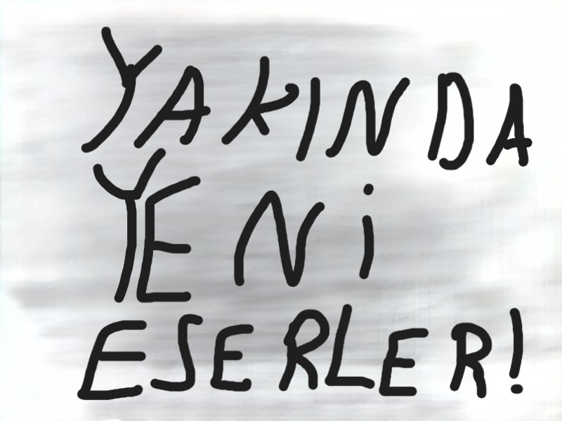
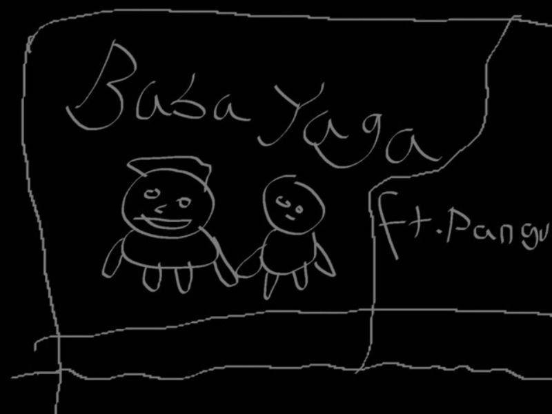
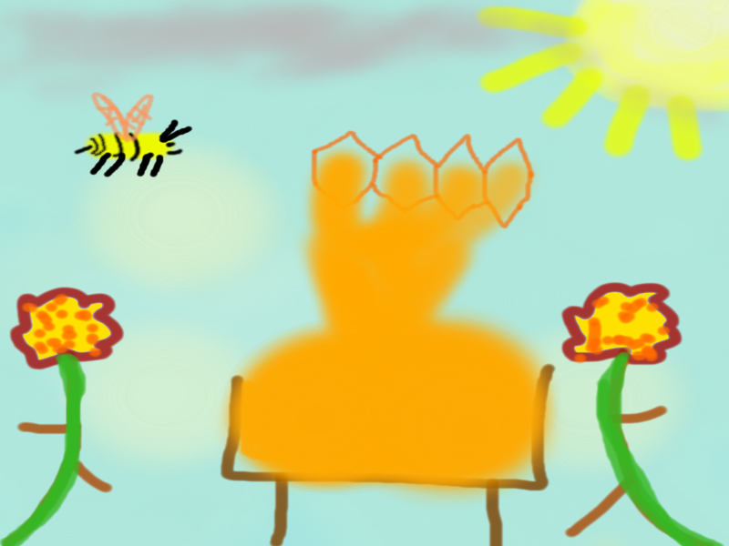

Calismalarim





Hakkinda cok bir şey bilinmese de; Tokatlı, güçlü ve atletik bir figür. Sert bakışları ve etkileyici duruşuyla dikkat çeker. "Script boy" olarak bilinir, yani kodlarla arası iyidir. Fit ve kaslı vücuduyla sporcu kimliği ön plandadır. Batman gibi gizemli bir hava taşır. Bal ve özellikle petek balı sever. Aynı zamanda arıdır ve uçarak kanatlarına vurgu yapar. Ancak, efsaneler arasında ayaklarının kertenkele ölüsü koktuğu da söylenir. (BabaYaga hakkında yıllardır toplanan tüm bilgiler bu kadardır. BabaYaga efsanevi bir şekilde hala gizemini korumaktadır...)
See moreBabayaga'nin sanat gecmisini anlatan bu kisimi dikkatlice okumanizi oneririz.
Babayaga, müzik dünyasında devrim yaratan isimlerden biri. Kendine has tarzıyla sınırları aşan sanatçı, "Toplu Ayar" ve "Toplu İniş" parçalarıyla listeleri altüst etti. "Toplu Ayar", dinleyiciyi sarsan ritimleri ve cesur anlatımıyla tam anlamıyla bir manifestoya dönüştü. Günümüz toplumuna sert bir bakış sunan eser, sadece bir şarkı değil, bir başkaldırı ve bir isyanın sesi. Öte yandan "Toplu İniş", karanlık melodileri ve derin sözleriyle ruhun en derin noktalarına hitap ediyor, dinleyiciyi kendi iç yolculuğuna çıkarıyor. Bu iki eser, Babayaga’yı müzik sahnesinde eşsiz bir konuma taşıdı ve sanat dünyasında yankı uyandırdı. Eleştirmenler, onun müziğini "zamansız" olarak tanımlarken, dinleyiciler her dinleyişte yeni bir anlam keşfetmeye devam ediyor. Babayaga, milyonların değil, milyarların sesi olmayı başardı. Ve bu sadece başlangıç. Tokat'ı farklı şeyler bekliyor...
Tokat Ülkesi’nin kaderini değiştiren, halkı peşinden sürükleyen ve küresel siyaseti sarsan bir lider: Babayaga. Tokat Şehri’nin başkanı olarak çıktığı yolda, kısa sürede tüm ülkeyi yönetimi altına aldı ve Tokat Ülkesi’ni dünya sahnesine taşıdı. Başkan Babayaga’nın yönetiminde Tokat, ekonomi, sanat ve teknoloji alanlarında altın çağını yaşamaya başladı. Özellikle müzik sektörüne yaptığı yatırımlarla ülkenin sesi tüm dünyaya yayıldı. "Toplu Ayar" ve "Toplu İniş", sadece müzik listelerini değil, halkın ruhunu da şekillendiren ulusal marşlar hâline geldi. Başkanın Vizyonu: "Toplu Ayar" Yasası: Halkın refah seviyesini yükseltmek için radikal reformlar. "Toplu İniş" Stratejisi: Ekonomik büyüme, kültürel devrim ve sanatın yükselişi. Tokat Ülkesi’nin başkanı olarak Babayaga, sadece bir yönetici değil, bir devrimci, bir sanatçı ve bir halk kahramanı. Onun liderliğinde Tokat, sadece bir şehir veya ülke değil, dünyanın merkezi oldu.
Babayaga, müzik dünyasında yarattığı devrimle yetinmeyerek YouTube platformunda da fırtınalar estirdi. "Toplu Ayar" ve "Toplu İniş", YouTube’a yüklendiği ilk saatlerde milyonlarca izlenmeye ulaştı. Şarkılar, yalnızca dinleyicileri etkilemekle kalmadı, aynı zamanda müzik anlayışını da kökten değiştirdi. "Toplu Ayar", YouTube yorumlarında bir başkaldırının simgesi hâline gelirken, "Toplu İniş" ise görselliğiyle izleyicileri büyüledi. Babayaga’nın benzersiz prodüksiyon anlayışı, videolarında da kendini gösterdi ve sanat dünyasında yeni bir standart belirledi. Müzik eleştirmenleri, YouTube’daki bu çıkışı "sadece bir paylaşım değil, kültürel bir olay" olarak tanımladı. Babayaga, böylece hem dijital müzik platformlarında hem de video dünyasında zirveye oturdu. Bu daha başlangıç. Babayaga, müziğin sınırlarını aşmaya ve yeni rekorlar kırmaya devam edecek.